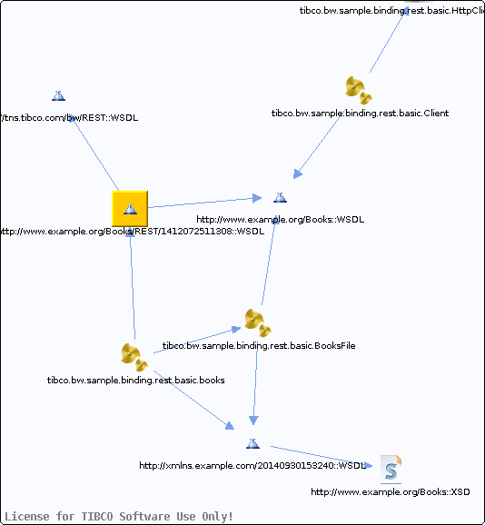

books.wsdl
Chapter contains books.wsdl crossreferences documentation.

Referenced From:
tibco.bw.sample.binding.rest.basic.books
References To:
http://www.example.org/Books::WSDL
http://tns.tibco.com/bw/REST::WSDL
Parent topic:
WSDLs